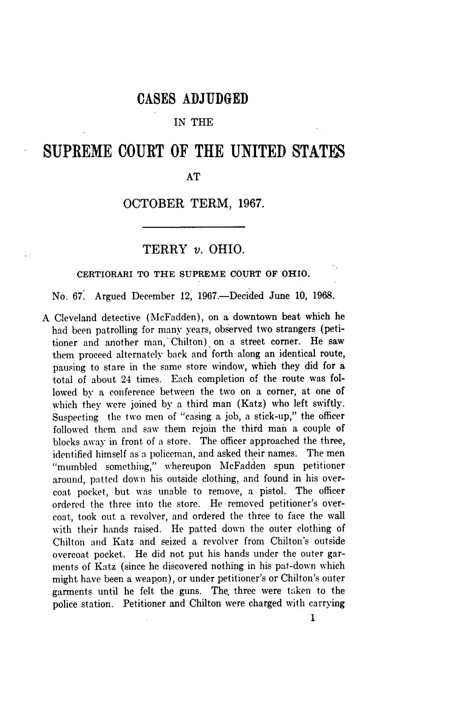

Optima Academy Online
An Education Experience Company
M/J CIVICS
Quarter / Module
Q2 · Module 4
Civil Liberties & Rights
Primary Source
Week 14 · Source 2
Author & Work
Terry v. Ohio, 392 U.S. 1 (1968)
Pairs With
Lesson 14.2 · Primary Source Report 14 (Canvas)
Primary Source 2
Terry v. Ohio, 392 U.S. 1 (1968)
Read this, then complete Primary Source Report 14 in Canvas.
📖 CONTEXT
Detective Martin McFadden stopped and patted down John Terry after observing behavior he recognized, from experience, as men casing a store for a robbery, discovering a concealed weapon. Chief Justice Warren's opinion for the Court set the standard for how much justification a brief stop and frisk requires. Read it alongside Lesson 14.2's account of reasonable suspicion versus probable cause.

📜 THE TEXT
“We merely hold today that where a police officer observes unusual conduct which leads him reasonably to conclude in light of his experience that criminal activity may be afoot… he is entitled for the protection of himself and others in the area to conduct a carefully limited search of the outer clothing of such persons in an attempt to discover weapons which might be used to assault him… And in justifying the particular intrusion the police officer must be able to point to specific and articulable facts which, taken together with rational inferences from those facts, reasonably warrant that intrusion. The scheme of the Fourth Amendment becomes meaningful only when it is assured that at some point the conduct of those charged with enforcing the laws can be subjected to the more detached, neutral scrutiny of a judge.”
(Opinion of the Court, Chief Justice Warren; condensed, public-domain text.)
💡 A NOTE ON THIS OPINION
Notice the limits the Court builds into this holding: a "carefully limited search of the outer clothing," aimed only at discovering weapons for officer safety, based on specific and articulable facts, not a hunch. The passage's closing line about "neutral scrutiny of a judge" is the same self-correction idea you will see again next week: courts remain able to review police conduct after the fact, even when a stop itself happens in seconds on the street.
➡️ WHAT YOU'LL DO NEXT
1
Primary Source Report 14 (Canvas, Tier 3)
Reread this excerpt alongside Miranda v. Arizona before writing. Quote directly from both sources and include a Works Cited list.
Optima Academy Online · M/J CIVICS · Quarter 2 · Primary Source Page
Week 14 · Terry v. Ohio, 392 U.S. 1 (1968)
© Optima Academy Online · An Education Experience Company